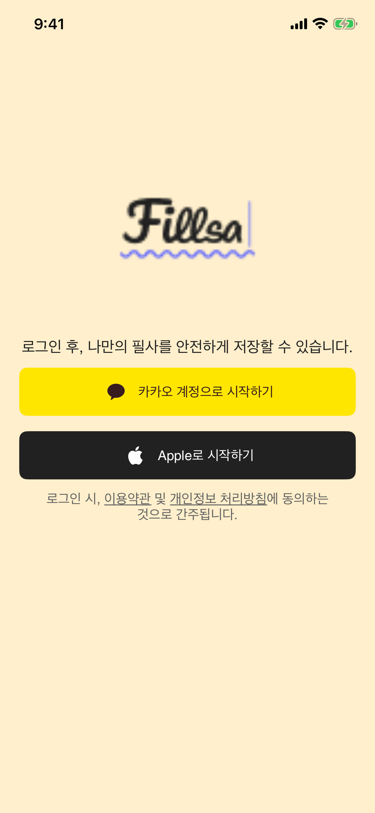

FIILSA · IOS CHANGE REPORT
회원 전용 전환
As-Is / To-Be 결과 보고서
iOS에서 비회원 사용 경로를 닫고, 로그아웃·세션 만료·회원 탈퇴 뒤 로그인 화면으로 돌아가도록 정리했습니다. 예전 기기에 저장된 비회원 필사는 동기화하거나 자동 삭제하지 않습니다.
최종 진입 흐름
로그인 전에는 회원 화면으로 이동할 수 없습니다. 로그아웃·유효한 세션 만료·탈퇴 완료는 모두 로그인 화면으로 이동하고 화면에 남아 있던 회원 상태를 초기화합니다.
As-Is / To-Be
| 영역 | As-Is · 변경 전 | To-Be · 변경 후 |
|---|---|---|
| 로그인 진입 | 화면에서 숨긴 닫기·비회원 시작 액션과 가이드 종료를 통한 Home 진입 가능성이 남아 있었습니다. | 카카오·Apple 로그인만 진입 수단으로 남기고, 로그인 성공 전 Home 이동을 차단했습니다. |
| 스플래시와 로그아웃 | 첫 실행·세션 판정과 로그아웃 후 로그인 이동은 선행 작업에서 구현됐지만, 늦은 화면 응답을 막는 공통 접근 상태는 없었습니다. | 회원 접근 상태를 루트에서 검사합니다. 로그아웃 후 늦게 도착한 스플래시·탭 액션도 Home을 다시 열지 못합니다. |
| 세션 만료·탈퇴 | 세션 만료 또는 탈퇴 뒤 비회원 Home으로 이어지는 경로가 남아 있었습니다. 이전 요청의 만료 응답이 새 로그인에 영향을 줄 수 있었습니다. | 두 경우 모두 로그인으로 이동합니다. 만료된 요청의 토큰 지문을 현재 세션과 비교해 이전 세션 응답을 무시합니다. |
| 이전 비회원 필사 | 로그인할 때 로컬 필사를 읽어 서버 요청에 동기화하고, 성공 후 지우는 코드가 있었습니다. | 로컬 필사를 읽거나 전송하거나 자동 삭제하지 않습니다. 서버 계약상 필요한 syncData는 빈 배열로 보냅니다. |
| Home·Calendar·List·필사 | 비회원 API와 기기 로컬 저장소를 쓰는 fallback이 회원 동작과 함께 남아 있었습니다. | 회원 API만 사용합니다. 서버 저장 실패를 로컬 성공으로 대체하지 않습니다. |
| My Page | 비회원 카드와 로그인 이동 분기가 남아 있었습니다. | 회원 카드만 표시합니다. 인증이 사라지면 로그인 화면으로 이동합니다. |
SQLite 파일과 스키마는 유지합니다. 따라서 기존 데이터는 자동 삭제되지 않지만, 변경 후 앱 화면에서는 접근할 수 없습니다.
변경 영향과 부작용
| 항목 | 사용자에게 생기는 변화 | 확인 상태 |
|---|---|---|
| 기존 비회원 데이터 | 기기 SQLite에는 남지만 앱에서 열거나 새 계정으로 동기화할 수 없습니다. 자동 삭제도 하지 않습니다. | 로그인 성공·실패 테스트에서 무전송·보존 확인 |
| 오프라인·서버 오류 | 비회원 API와 로컬 저장 대체 경로가 없어 조회·저장이 서버 응답에 의존합니다. 필사 저장 실패 때는 편집 화면을 유지합니다. | 의도한 동작 변화 · 실제 운영 서버 장애 상황은 미검증 |
| 인증 해제 | 로그아웃·현재 세션 만료·탈퇴 뒤 로그인으로 돌아가며, 화면에 있던 회원 상태는 초기화됩니다. | reducer·UI 테스트 확인 |
| 화면 회귀 | 확인된 제품 화면 회귀는 없습니다. 전체 테스트에서 로딩 표시의 접근성 좌표가 10pt 어긋난 사례가 있었으나 녹화 화면은 중앙이었고, 세로 방향을 고정한 단독 검사는 통과했습니다. | 전체 순서 재검증은 사용자 지시에 따라 중단 · 잔여 테스트 위험 |
화면과 검증 근거
로그아웃 후 로그인 화면
My Page에서 로그아웃한 뒤 카카오·Apple 로그인 버튼이 보이고 My Page가 사라진 상태를 UI 테스트에서 캡처했습니다.
최종 시뮬레이터 빌드 통과 · iPhone 17e, iOS 26.4.1 대상. 변경 관련 검사는 새 빌드에서 143/143건 통과했고, 이후 전역 로딩 화면 단독 검사도 통과했습니다.
- 회원 상태·세션 만료·탈퇴: TCA reducer 단위 테스트
- 예전 로컬 필사 무전송·보존: SQLite를 사용한 로그인 성공·실패 테스트
- 로그인·My Page·가이드 화면: XCUITest
자세한 검사 항목과 실행 결과는 회원 전용 QA 기록에 남겼습니다.

판정 범위
사용자 지시에 따라 이번 회원 전용 이동과 비회원 상태 제거는 Figma 대조 없이 진행했습니다. 실제 카카오·Apple 계정과 운영 서버의 종단 간 로그인은 실행하지 않았고, 인증 및 API 경계는 주입한 테스트 응답으로 확인했습니다.
최신 전체 실행은 183건 중 181건 통과, 2건 실패였습니다. 하나는 이번 변경 전에도 실패한 Home 툴팁 화살표 좌표 검사이고, 하나는 전역 로딩 표시의 접근성 좌표 검사입니다. 후자는 화면 녹화에서 시각적 중앙 배치를 확인하고 시뮬레이터 방향을 고정한 단독 검사에서 통과했습니다. 사용자 지시에 따라 전체 테스트를 다시 완료하지 않았으므로 전체 통과로 판정하지 않습니다.